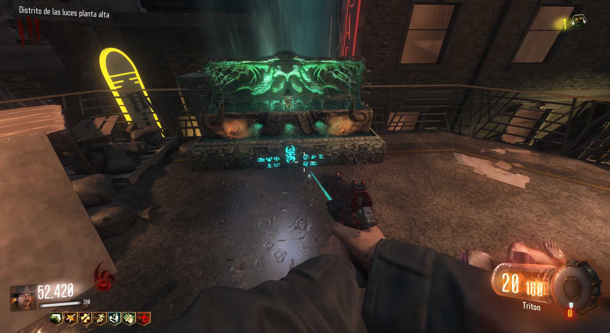
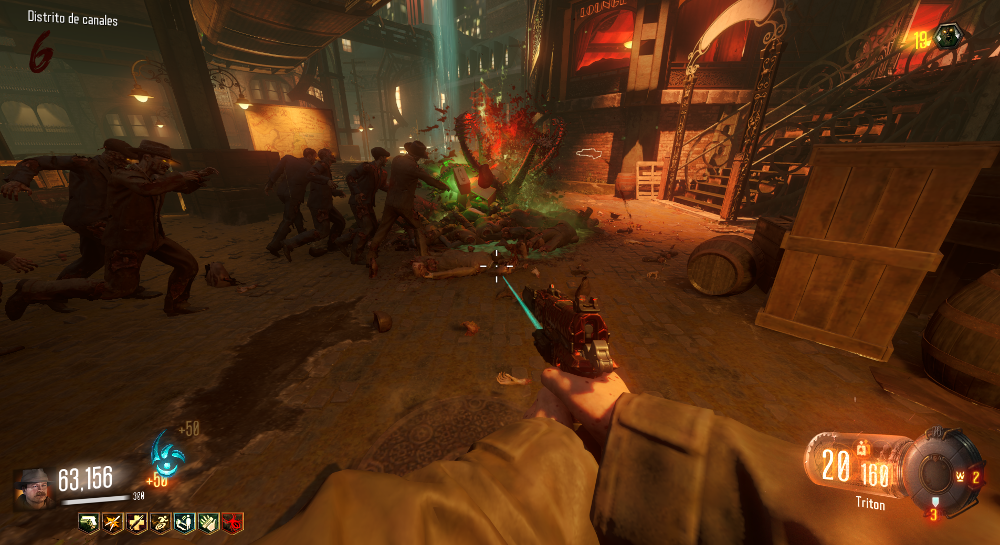
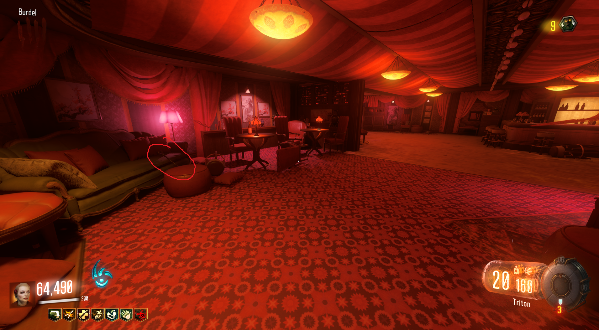
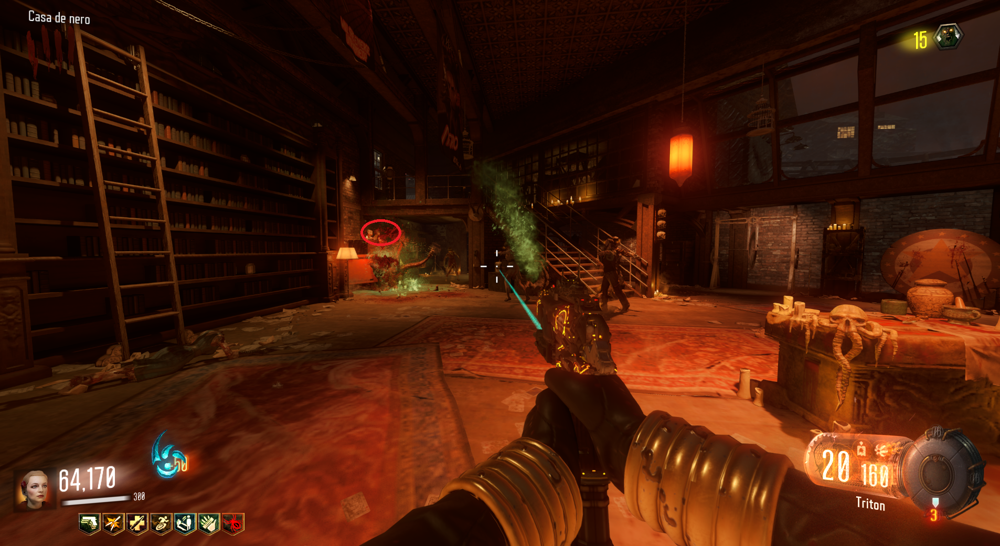
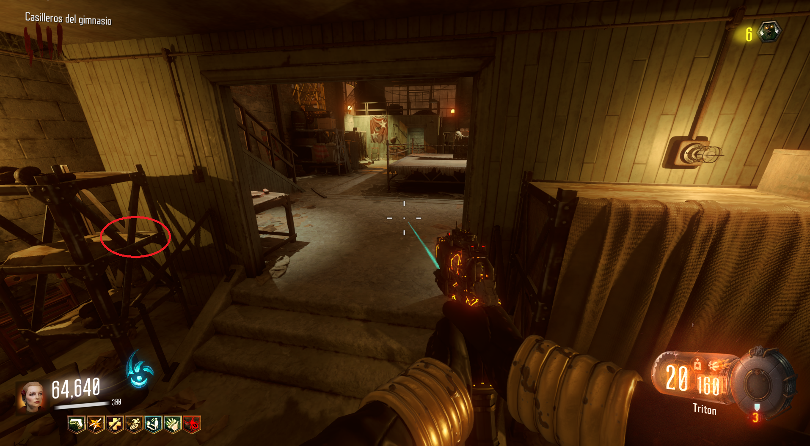
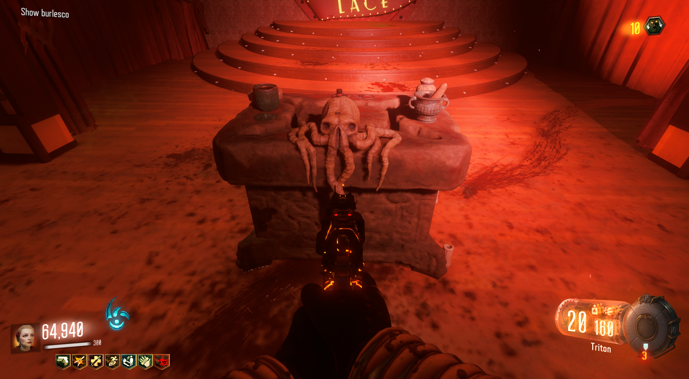
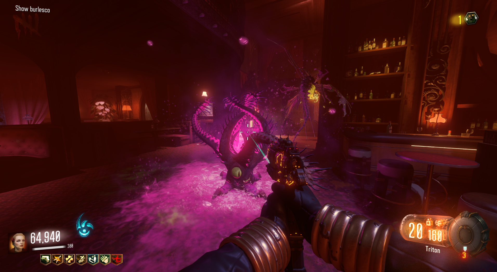

Para mejorar los Lil'Arnies, lo primero será conseguirlos en la caja.

Matar: Deberemos de matar a 100 zombies con los Lil'Arnies.

Si matamos los 100 zombies, iremos en busca de tres objetos a los que tendremos que tirarles un Lil'Arnie a cada uno. Los objetos tienen que desaparecer si lo hacemos correctamente.
Primera parte:
En el ritual de Canals, planta baja, el bastón apoyado en el sofá verde.(Lanzar Lil'Arnie)

Segunda parte:
En el ritual del Spawn, a un sombrero encima de un maniquí.(Lanzar Lil'Arnie)

Tercera parte:
En el ritual de Waterfront, a la pajarita de la estantería.(Lanzar Lil'Arnie)

Iremos al ritual de Footlight y veremos al pulpo con los tres objetos. Al lanzar otro Lil'Arnie a la mesa, una animación graciosa ocurrirá.

Y con esto tendremos la mejora completada.
